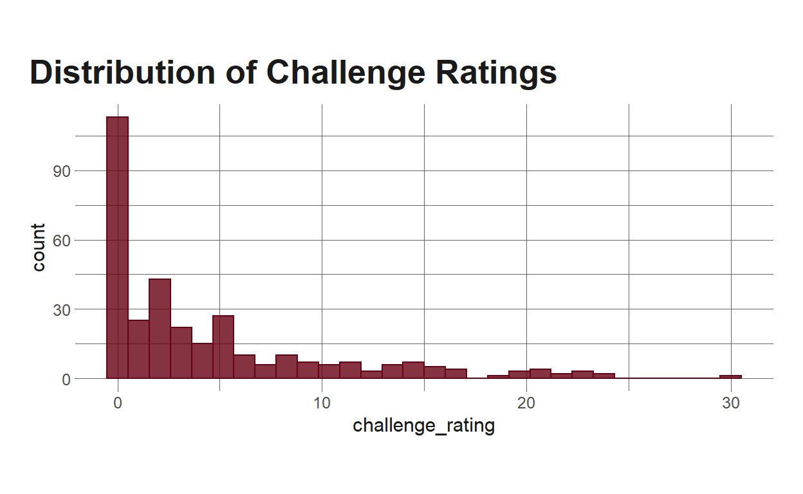
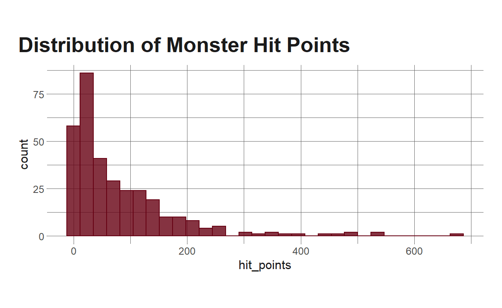
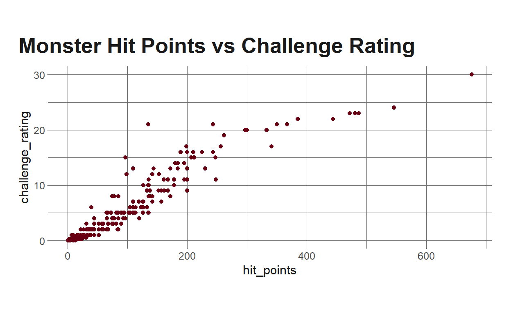
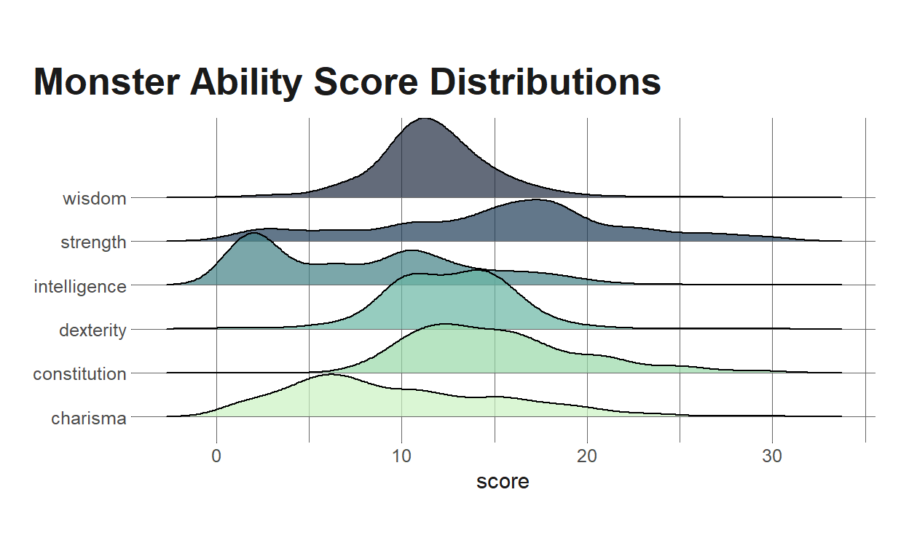
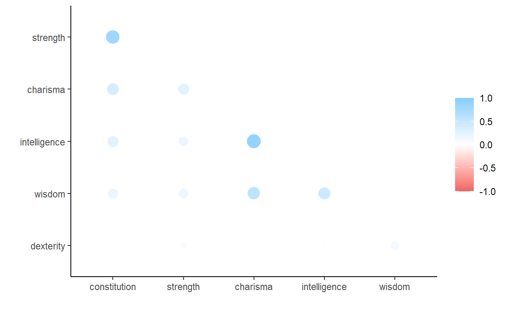
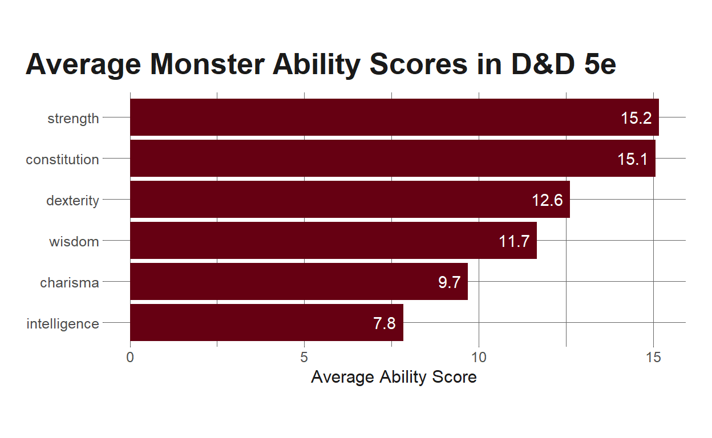
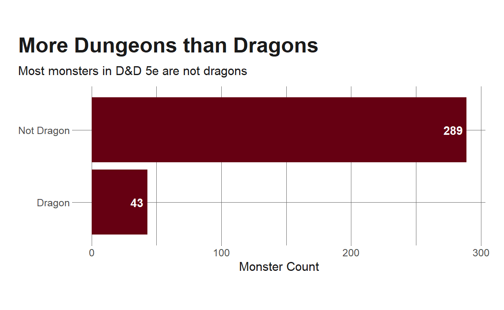
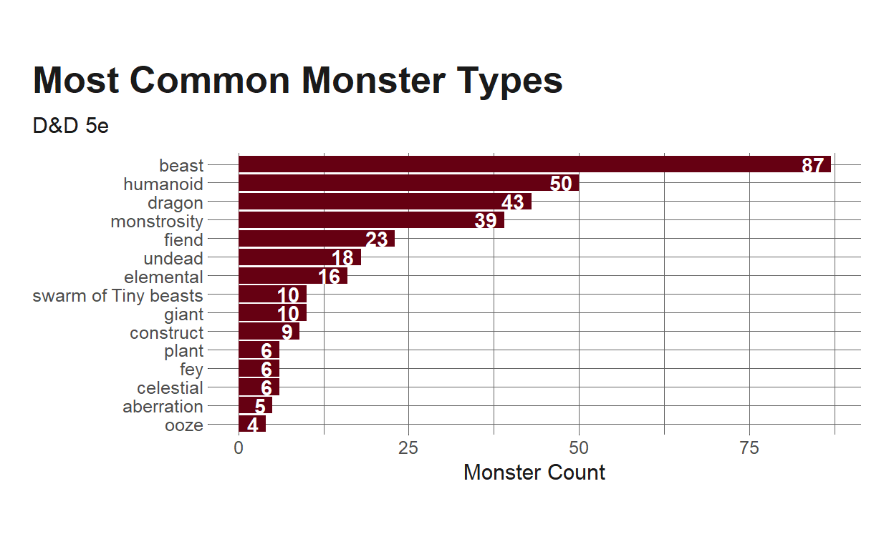
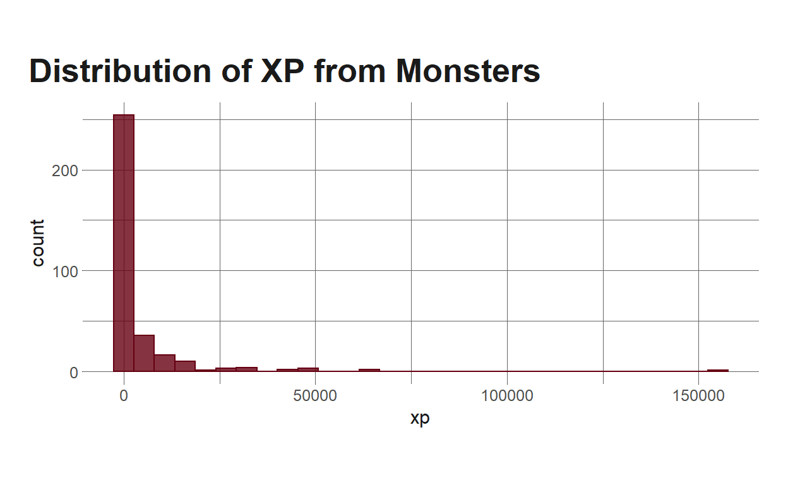
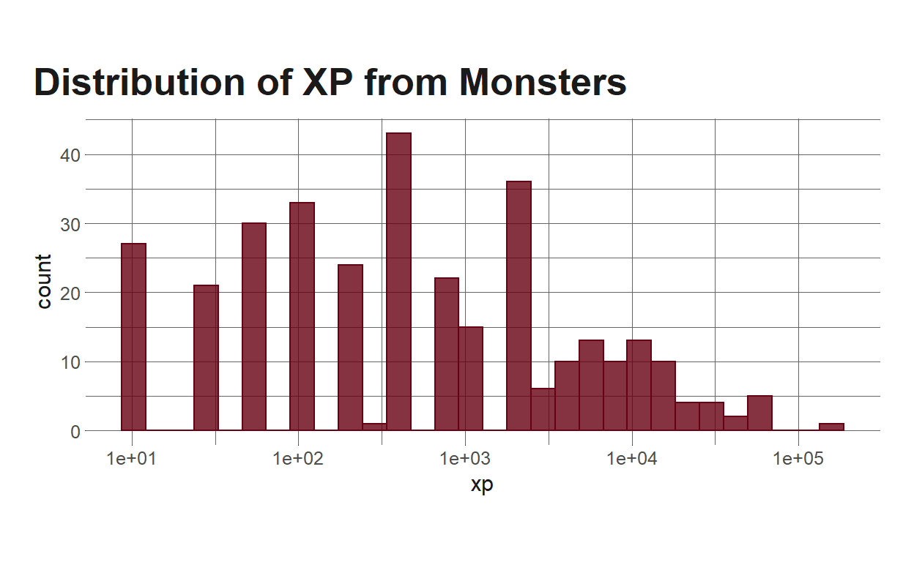

In my last blog post, I walked through how to extract and wrangle/rectangle monster data from the Dungeons and Dragons 5th edition (D&D 5e) API. In this post, I want to explore this data a little bit – looking at some counts, descriptive statistics, etc. In later posts, I’m planning to do some different statistical analyses, potentially include cluster analysis and some predictive modeling.
One note – the monsters represented in this data aren’t all of the monsters in D&D. The API I’m using has monsters from the systems reference document (SRD), and this doesn’t include all of the monsters introduced in specific campaigns or in books like Xanathar’s Guide to Everything.
With all of that said, let’s get to it.
Setup
To start, I’m going to load in some packages and get the data. If you’re interested in the process for getting the data, you might want to check out my previous post in this series.
knitr::opts_chunk$set(echo = TRUE, warning = FALSE, message = FALSE)
library(tidyverse)
library(eemisc)
library(jsonlite)
library(ggridges)
library(gt)
library(corrr)
herm <- harrypotter::hp(n = 1, option = "HermioneGranger")
opts <- options(
ggplot2.discrete.fill = list(
harrypotter::hp(n = 3, option = "HermioneGranger"),
harrypotter::hp(n = 7, option = "Always")
)
)
theme_set(theme_ee())
dnd_base <- "https://www.dnd5eapi.co/api/monsters/"
### Functions and process for getting data; described in previous post
fetch_monster <- function(monster) {
dnd_url <- "https://www.dnd5eapi.co/api/monsters/"
ret <- fromJSON(paste0(dnd_url, monster)) %>%
enframe() %>%
pivot_wider(names_from = name,
values_from = value)
return(ret)
}
compare_lens <- function(x, size = 1) {
all(map_lgl(x, ~length(unlist(.x)) == size))
}
cond_unlist <- function(x) {
if (compare_lens(x) == TRUE) {
unlist(x)
} else {
x
}
}
mons <- fromJSON(dnd_base)$results %>%
pull(index)
monster_lists <- map(mons, fetch_monster)
mons_bind <- bind_rows(monster_lists)
mons_df <- mons_bind %>%
mutate(across(.cols = everything(), ~cond_unlist(x = .x)))
Challenge Ratings and Hit Points
For whatever reason, the first thing that strikes me to look at is the monsters’ challenge ratings (CRs). As the name suggests, CRs are an indication of how difficult a monster is for a group of players to fight, with higher CRs corresponding to a more difficult fight. The general rule of thumb is that a party of players can fight monsters about equal to their own level (or lower), and that higher CR monsters could be pretty tough.
mons_df %>%
ggplot(aes(x = challenge_rating)) +
geom_histogram(fill = herm, color = herm, alpha = .8) +
labs(
title = "Distribution of Challenge Ratings"
)

The general rule makes sense in conjunction with this distribution of CRs. Most of the action in D&D campaigns tends to occur in lower levels, so it makes sense that the majority of the monsters here have CRs < 10. We do see one dude hanging out at CR 30, though, so let’s see who that is.
mons_df %>%
slice_max(order_by = challenge_rating, n = 1)
# A tibble: 1 x 31
index name size type subtype alignment armor_class hit_points
<chr> <chr> <chr> <chr> <list> <chr> <int> <int>
1 tarr~ Tarr~ Garg~ mons~ <chr [~ unaligned 25 676
# ... with 23 more variables: hit_dice <chr>, speed <list>,
# strength <int>, dexterity <int>, constitution <int>,
# intelligence <int>, wisdom <int>, charisma <int>,
# proficiencies <list>, damage_vulnerabilities <list>,
# damage_resistances <list>, damage_immunities <list>,
# condition_immunities <list>, senses <list>, languages <chr>,
# challenge_rating <dbl>, xp <int>, special_abilities <list>,
# actions <list>, legendary_actions <list>, url <chr>,
# reactions <list>, forms <list>Right, so we can see the monster with the highest challenge rating is the Tarrasque. That’s this guy.

Next, let’s take a look at the distribution of monster hit points. For those unfamiliar with D&D/video games more broadly, hit points represent the amount of health a character/monster has, and reducing someone to 0 hit points will defeat them. Typically (and I’ll explore this relationship more momentarily), hit points will increase as CR increases.
mons_df %>%
ggplot(aes(x = hit_points)) +
geom_histogram(fill = herm, color = herm, alpha = .8) +
labs(
title = "Distribution of Monster Hit Points"
)

Let’s look a little bit more at descriptives for these previous two stats:
challenge_rating hit_points
Min. : 0.000 Min. : 1.00
1st Qu.: 0.500 1st Qu.: 19.00
Median : 2.000 Median : 45.00
Mean : 4.515 Mean : 81.49
3rd Qu.: 6.000 3rd Qu.:114.00
Max. :30.000 Max. :676.00 And, again, presumably there’s a strong correlation between them, but let’s check that as well.
cor(mons_df$hit_points, mons_df$challenge_rating)
[1] 0.9414071So, we see a very strong correlation between hit points and challenge rating. Let’s plot this.
mons_df %>%
ggplot(aes(x = hit_points, y = challenge_rating)) +
geom_point(color = herm) +
labs(
title = "Monster Hit Points vs Challenge Rating"
)

Yeah…that’s what we’d expect a strong correlation to look like. One thing to note is that, although it looks like the Tarrasque fits on the general trend line here, outliers can have a strong influence on the correlation coefficient, so I’ll do a quick check to see what the value would be if we didn’t include the Tarrasque.
mons_df %>%
filter(name != "Tarrasque") %>%
select(hit_points, challenge_rating) %>%
cor() %>%
.[[1,2]]
[1] 0.9409642Our correlation coefficient is pretty much identical to the previous, Tarrasque-included calculation, which makes sense given what we see in the scatterplot, but still a reasonable check to include.
Ability Scores
Ability scores are central to D&D and are the thing I’m most interested in looking at here. A quick Google search will tell you all you want to know (& more) about ability scores, but as a quick tl;dr – ability scores represent a character’s (player, monster, or non-player-character) abilities in several different areas, and each does different things. Furthermore, different character classes will value different ability scores. Fighters, for example, will tend to value strength and constitution; rangers and rogues will value dexterity; wizards will value intelligence, etc. Characters’ ability scores affect how well they do in combat, how they cast spells, how well they can persuade others, whether or not they can successfully climb a trees, etc – they affect pretty much anything you want to do in the game. And, due to how ability scores are allocated, characters will not have high scores on every ability, and the differential prioritizations and limited availability makes the distributions (and relationships among the scores) interesting to me.
So, let’s first check out the distributions.
abs <- c("strength", "charisma", "dexterity", "intelligence", "wisdom", "constitution")
ab_scores <- mons_df %>%
select(name, all_of(abs)) %>%
pivot_longer(cols = 2:ncol(.),
names_to = "ability",
values_to = "score")
ab_scores %>%
ggplot(aes(x = score, y = ability, fill = ability)) +
geom_density_ridges(alpha = .7) +
labs(
title = "Monster Ability Score Distributions",
y = NULL
) +
theme(
legend.position = "none"
)

It’s interesting to me that the distributions all have different shapes, and especially that wisdom appears to the be only ability score that has a normal distribution for monsters.
Another interesting question to me is to what extent are these correlated. To check this out, we could use base R’s cor() function, but I want to try the {corrr} package, which provides some helpers for doing correlation analyses.
abs_corrs <- mons_df %>%
select(all_of(abs)) %>%
correlate() %>%
rearrange() %>%
shave()
abs_corrs %>%
fashion() %>%
gt() %>%
tab_header(
title = "Ability Score Correlations",
subtitle = "D&D 5e Monsters"
)
| Ability Score Correlations | ||||||
|---|---|---|---|---|---|---|
| D&D 5e Monsters | ||||||
| term | constitution | strength | charisma | intelligence | wisdom | dexterity |
| constitution | ||||||
| strength | .86 | |||||
| charisma | .60 | .52 | ||||
| intelligence | .51 | .42 | .90 | |||
| wisdom | .45 | .42 | .74 | .65 | ||
| dexterity | -.19 | -.23 | .21 | .21 | .36 | |
We see some interesting stuff here:
- Dexterity has weak to moderate correlations with everything.
- Except for dexterity, constitution has moderate to large correlations with everything. This makes sense, since constitution relates to how many hit points creatures have, and so we’d expect cons to increase with level, and so regardless of what a monster’s primary ability is, higher level monsters will likely have high cons scores.
- The strongest correlations are cons:strength and intelligence:charisma, which both seem reasonable. Int/charisma are useful for spellcasting and spell saving throws (and so are likely to travel together in monster stat blocks), and strength/cons are likely going to travel together in the form of big beefy melee combat type monsters.
We can also look at the same data using the rplot() function in {corrr}, although it’s not super easy to see:
abs_corrs %>%
rplot()

Beyond looking at the distributions and correlations of these ability scores, I think it’s also worth it to just look at the means. This will give us a sense of what the average monster in D&D is like, stats-wise.
ab_scores %>%
group_by(ability) %>%
summarize(avg = mean(score)) %>%
mutate(ability = fct_reorder(ability, avg)) %>%
ungroup() %>%
ggplot(aes(x = avg, y = ability)) +
geom_col(fill = herm) +
geom_text(aes(label = round(avg, 1), x = avg - .2), hjust = 1, color = "white") +
labs(
x = "Average Ability Score",
y = NULL,
title = "Average Monster Ability Scores in D&D 5e"
)

So, on average, monsters tend to be stronger and have higher constitutions, but have lower intelligence. Which makes sense if we look at the distributions again.
Finally, we might want to look at which monster scores the highest on each ability score.
ab_scores %>%
select(ability, name, score) %>%
mutate(ability = str_to_title(ability)) %>%
group_by(ability) %>%
slice_max(order_by = score, n = 1) %>%
ungroup() %>%
gt() %>%
tab_header(
title = "Highest Ability Scores",
subtitle = "...and the monsters that own them"
) %>%
cols_label(
name = "Monster",
ability = "Ability",
score = "Score"
) %>%
tab_style(
style = cell_text(weight = "bold"),
locations = cells_column_labels(columns = everything())
)
| Highest Ability Scores | ||
|---|---|---|
| ...and the monsters that own them | ||
| Ability | Monster | Score |
| Charisma | Solar | 30 |
| Constitution | Tarrasque | 30 |
| Dexterity | Will-o'-Wisp | 28 |
| Intelligence | Solar | 25 |
| Strength | Ancient Gold Dragon | 30 |
| Strength | Ancient Red Dragon | 30 |
| Strength | Ancient Silver Dragon | 30 |
| Strength | Kraken | 30 |
| Strength | Tarrasque | 30 |
| Wisdom | Solar | 25 |
One thing to keep in mind is that ability scores are capped at 30, so we see a handful of abilities that, according to the game rules, cannot be any higher (cons, strength, and charisma). We also see multiple monsters hitting the strength cap, including our old friend the Tarrasque. And we see the Solar represented in 3 categories (charisma, int, wisdom). I wasn’t familiar with the Solar before making this table, so I looked it up, and it seems like a sword-welding angel, which is pretty cool.

Other Questions
I’ll cap this post off by looking at a few odds and ends. This one might be a little silly, but since the game is called Dungeons and Dragons, it might be relevant to see how many monsters are actually dragons.
mons_df %>%
mutate(is_dragon = if_else(type == "dragon", "Dragon", "Not Dragon")) %>%
count(is_dragon) %>%
ggplot(aes(x = n, y = is_dragon)) +
geom_col(fill = herm) +
geom_text(aes(label = n, x = n - 3), hjust = 1, color = "white", fontface = "bold") +
labs(
title = "More Dungeons than Dragons",
subtitle = "Most monsters in D&D 5e are not dragons",
y = NULL,
x = "Monster Count"
)

Given the above, we might be interested in seeing which monster types are the most common:
mons_df %>%
count(type) %>%
ggplot(aes(x = n, y = fct_reorder(type, n))) +
geom_col(fill = herm) +
geom_text(aes(label = n, x = n - 1), hjust = 1, color = "white", fontface = "bold") +
labs(
title = "Most Common Monster Types",
subtitle = "D&D 5e",
y = NULL,
x = "Monster Count"
)

We can see here that beasts are the most common monster type, followed by humanoids and then dragons. I’m not really sure what’s going on with the “swarm of tiny beasts,” so let’s take a peek at those.
mons_df %>%
filter(str_detect(type, "swarm")) %>%
pull(name)
[1] "Swarm of Bats" "Swarm of Beetles"
[3] "Swarm of Centipedes" "Swarm of Insects"
[5] "Swarm of Poisonous Snakes" "Swarm of Quippers"
[7] "Swarm of Rats" "Swarm of Ravens"
[9] "Swarm of Spiders" "Swarm of Wasps" I suppose that makes sense – there are stat blocks for swarms of bats, spiders, etc.
The last thing I’m going to check out here is the experience points (xp) distributions. My sense is that it’ll look similar to the distributions for challenge rating and hit points, since tougher monsters will award more experience for beating them. But still worth checking out.
mons_df %>%
ggplot(aes(x = xp)) +
geom_histogram(fill = herm, color = herm, alpha = .8) +
labs(
title = "Distribution of XP from Monsters"
)

So this plot isn’t great since the Tarrasque is worth over 150k xp, which makes it harder to see the distribution at the lower end. There are also a few monsters that award ~50k xp, which again also makes it difficult to distinguish values at the lower end. I’ll filter put this on a log scale to make it easier to see the lower end.
mons_df %>%
ggplot(aes(x = xp)) +
geom_histogram(fill = herm, color = herm, alpha = .8) +
labs(
title = "Distribution of XP from Monsters"
) +
scale_x_log10()

This is a lot easier to read – we can see that the modal value for xp is maybe 500ish, although it’s also quite common for monsters to award 100xp or less. Monsters that award over 10k xp are pretty rare.
And that’ll be it for this one. In the next blog post in this series, I’ll likely do some sort of clustering – probably latent profile analysis because I want to brush back up on it – to examine different groups of monsters based on their ability scores.